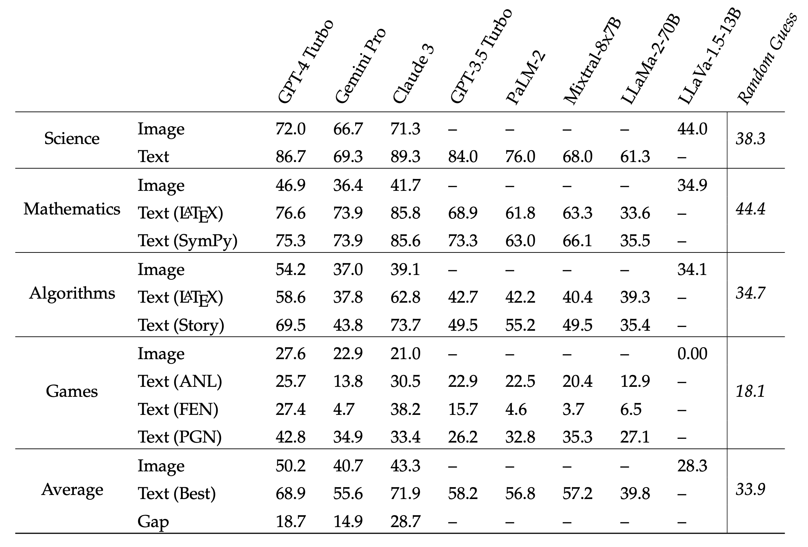
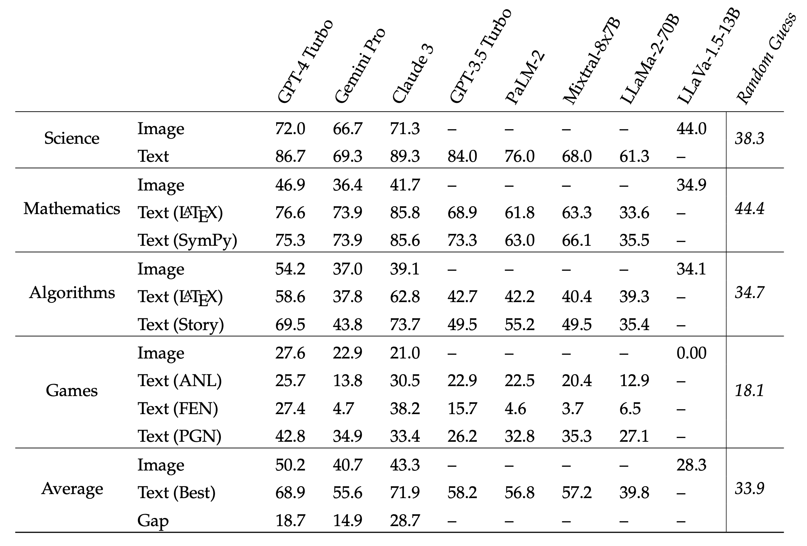

Do multimodal foundation models treat every modality equally?
Introducing IsoBench, a benchmark dataset containing problems from four major areas: math, science, algorithms, and games. Each example is presented with multiple isomorphic representations of inputs, such as visual, textual, and mathematical presentations.
Click here to see full IsoBench results.

Abstract
Current foundation models exhibit impressive capabilities when prompted either with text only or with both image and text inputs. But do their capabilities change depending on the input modality? In this work, we propose IsoBench, a benchmark dataset containing problems from four major areas: math, science, algorithms, and games. Each example is presented with multiple isomorphic representations of inputs, such as visual, textual, and mathematical presentations. IsoBench provides fine-grained feedback to diagnose performance gaps caused by the form of the representation. Across various foundation models, we observe that on the same problem, models have a consistent preference towards textual representations. Most prominently, when evaluated on all IsoBench problems, Claude-3 Opus performs 28.7 points worse when provided with images instead of text; similarly, GPT-4 Turbo is 18.7 points worse and Gemini Pro is 14.9 points worse. Finally, we present two prompting techniques, IsoCombination and IsoScratchPad, which improve model performance by considering combina- tions of, and translations between, different input representations.
IsoBench Results
Within each subject, the best scores in processing image representations are highlighted in blue, and the best in text representations are in red. Overall, GPT-4 Turbo is the best for images and Claude-3 Opus is the best for text. Across four subjects within IsoBench, multimodal foundation models have a strong preference for text modalities. The gap in accuracy between the best text representation and its isomorphic image representation can be as large as 28.7%.
IsoCombination and IsoScratchPad

Illustration of IsoCombination (IsoCB) and IsoScratchPad (IsoSP). IsoCB combines all representations provided by a user and constructs one unified prompt for a foundation model. IsoSP is a two-step prompting method, where a foundation model first describes an image and then uses the textual description as the sole representation for a given task.
Best prompting methods are highlighted in red and improvements over image-only prompts are in (green). Both methods improve performance in comparison with image representations, and for certain domains, IsoCombination additionally improves performance relative to text representations.
Full IsoBench Results
 

Full IsoBench results including more API-access models (GPT-3.5 Turbo and PaLM-2) and open-source models (LLaMa-2 70B and LLaVA-1.5 13B).
BibTeX
@inproceedings{fu2024isobench,
title={{I}so{B}ench: Benchmarking Multimodal Foundation Models on Isomorphic Representations},
author={Deqing Fu and Ruohao Guo and Ghazal Khalighinejad and Ollie Liu and Bhuwan Dhingra and Dani Yogatama and Robin Jia and Willie Neiswanger},
booktitle={First Conference on Language Modeling (COLM)},
year={2024},
note={First four authors contributed equally.}
}